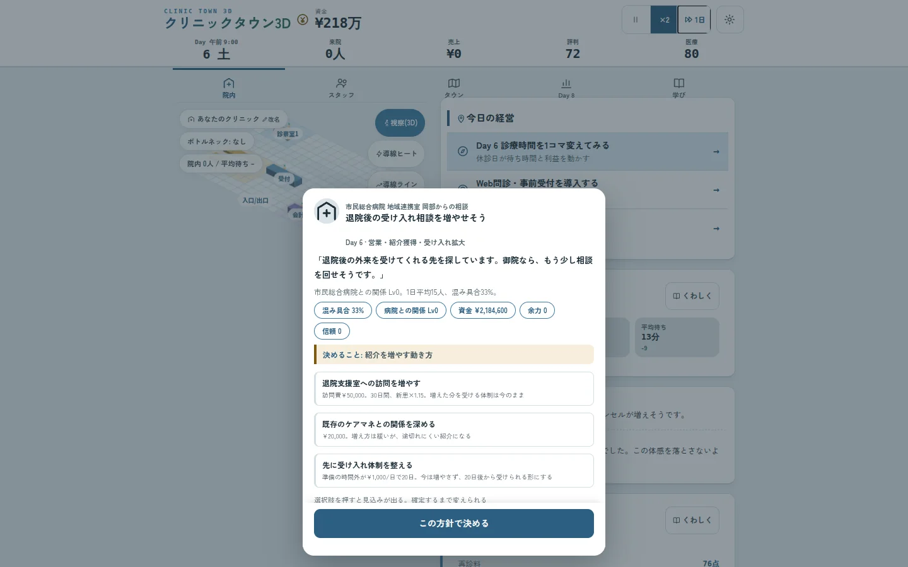
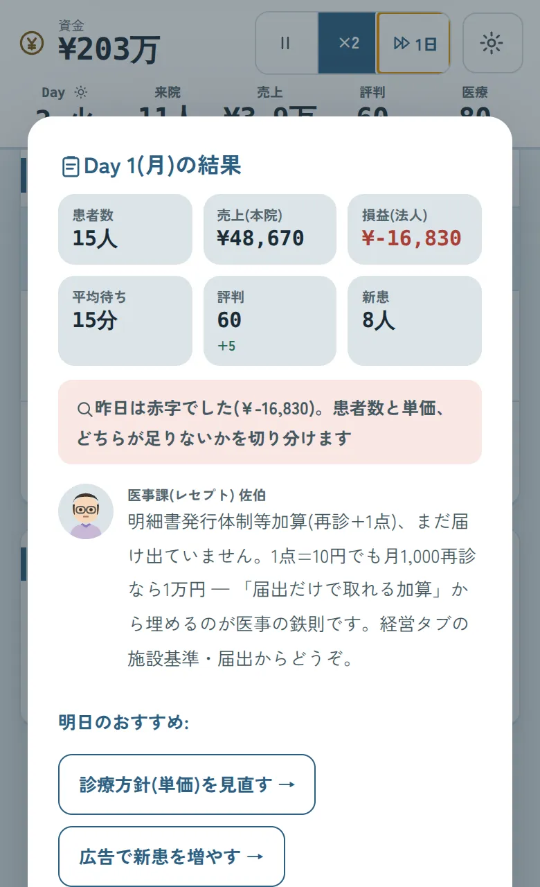
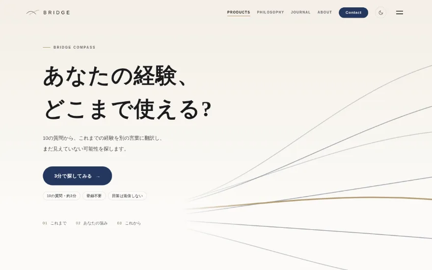
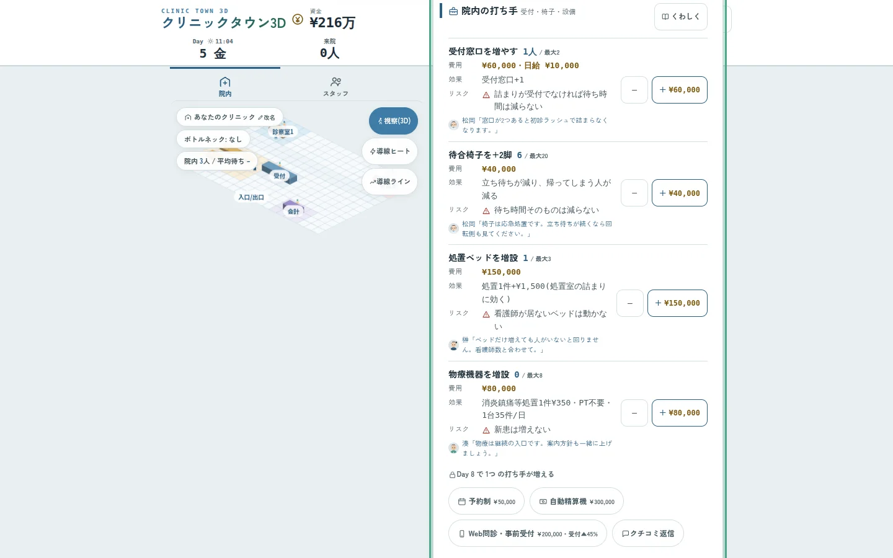
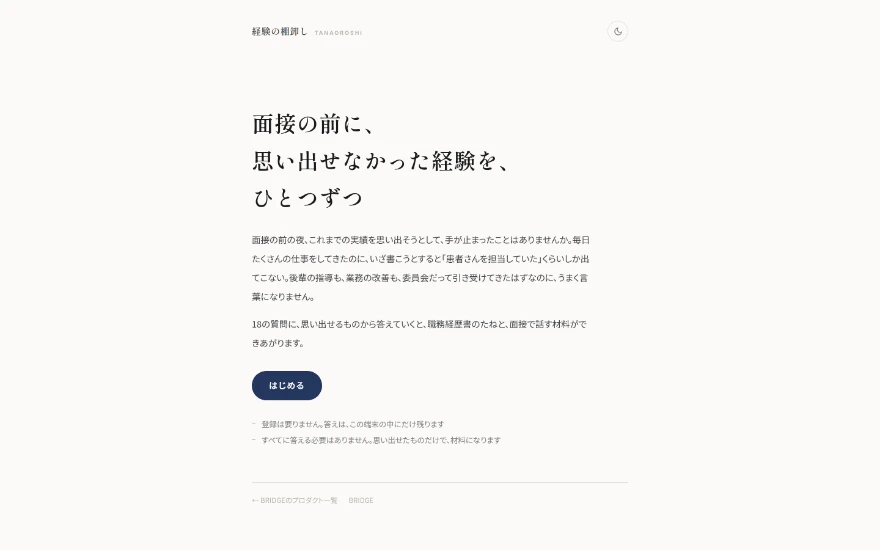

看護師・リハビリ職・医療事務の方へ
医療職の仕事と学びを広げる、道具と経営ゲーム。登録なしで、ブラウザから。
BRIDGE Compass・10の質問・約3分
実際のゲーム画面(2026-09-21 撮影)


無料・登録なし。ブラウザで動き、入力は端末の中にだけ残ります。

10の質問から、いつもの仕事を別の言葉に翻訳。まだ使っていない可能性を探します。

スタッフを配置し、届出を決め、会計のたびに実際の保険点数を見る。

転職や面接で、実績をうまく言えないときに。
理学療法士の私(橋本渉)がひとりで運営しています。